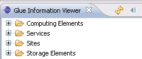

ArrayListIn the above code a category "Computing Elements" is added. In this category the objects that have a GLUE object name "GlueCE" and a object table name "GlueCE" as well. The reason why there is a GLUE object name as well as an Object Table Name is that we want to be able to distinguish entries with the same GLUE object name in order to be able to have the same GLUE object in different categories. This way we can add a GlueService element in another category using the GLUE object attribute. This is shown in the code bellow.list = new ArrayList (); InfoTopTreeCategory glueInfoTopTreeCategory = new InfoTopTreeCategory(); ArrayList glueInfoTopTreeCategoryArray = null; glueInfoTopTreeCategoryArray = new ArrayList (); glueInfoTopTreeCategory = new InfoTopTreeCategory(); glueInfoTopTreeCategory.setObjectTableName( "GlueService" ); glueInfoTopTreeCategory.setGlueObjectName( "GlueService" ); glueInfoTopTreeCategoryArray.add( glueInfoTopTreeCategory ); topTreeElement = new InfoTopTreeElement(glueInfoTopTreeCategoryArray, "Services");
glueInfoTopTreeCategory.setObjectTableName( "GriaDataService" );
glueInfoTopTreeCategory.setGlueObjectName( "GlueService" );
glueInfoTopTreeCategoryArray.add( glueInfoTopTreeCategory );
topTreeElement = new InfoTopTreeElement(glueInfoTopTreeCategoryArray,
"Storage Elements");
list.add(topTreeElement);
The objects that are shown in the GLUE information view are the ones gathered by the method public void scheduleFetch(final IProgressMonitor monitor) that is defined in the interface IExtendedGridInfoService.
The existing categories are shown in the following image
